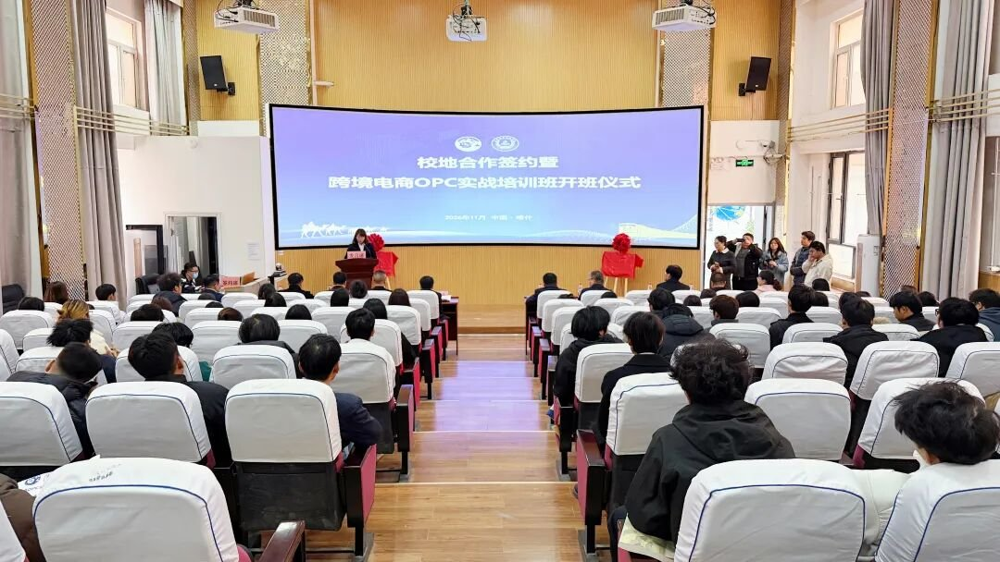
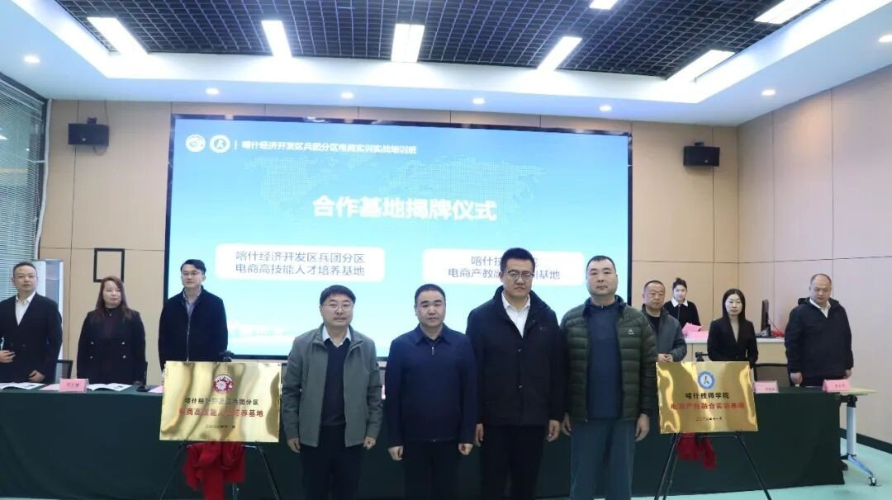
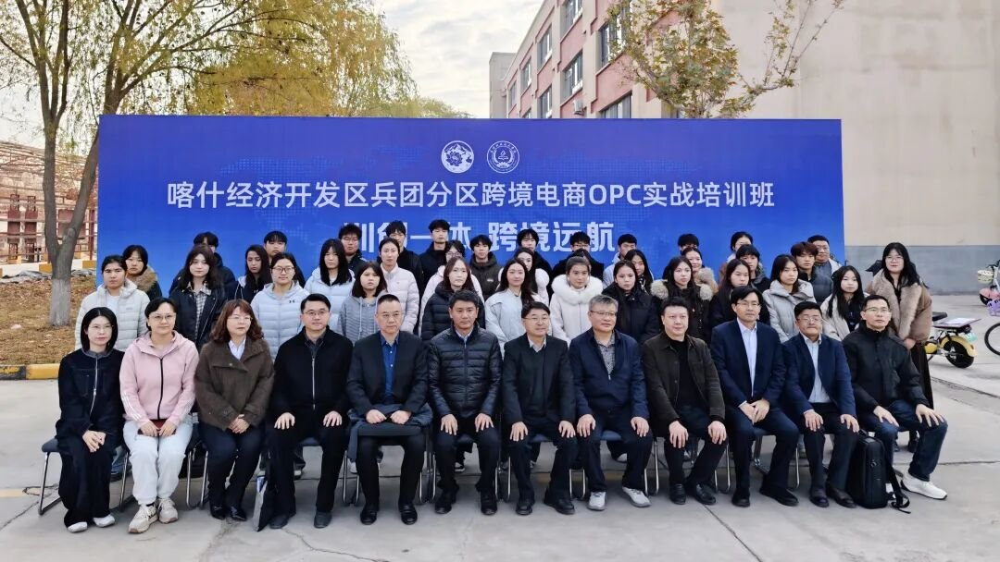

11 月 19 日至 20 日，喀什连续举行两场电商实战培训开班仪式：喀什技师学院电商实操实战班与喀什职业技术学院跨境电商 OPC 实战培训班先后开班，两所院校的电商产教融合实训基地同步揭牌。两期培训均由全国跨境电子商务产教融合共同体指导赋能、大湾区产教融合研究院等承办，授课师资全部来自大湾区跨境电商行业企业专家。课堂直接开在机房，课程从全球市场格局讲到选品、成本核算与平台规则。
把这两场培训放进更大的背景里看，它们不是孤立的教学活动，而是一条正在成形的人才链的开端——从课程与师资输入，到实训基地落地，再到后续的创业陪跑与就业对接。

一、事实层面：两天里的四个动作
第一个动作是培训接续开班。11 月 19 日，喀什技师学院电商实操实战班开班，兵团分区管委会副主任何庚与喀什技师学院党委委员、副院长秦孔代表校地双方签署合作协议；11 月 20 日，喀什职业技术学院跨境电商 OPC 实战培训班开班，为期七天，校地双方同样签署合作协议。两期培训均采用"实战教学＋创业陪跑"的方式。
第二个动作是实训基地揭牌。11 月 19 日，喀什技师学院电商产教融合实训基地、喀什经济开发区兵团分区电商高技能人才培养基地揭牌；11 月 20 日，喀什职业技术学院跨境电商产教融合实训基地揭牌，学院同时获授"全国跨境电子商务产教融合共同体副理事长单位"牌匾。
第三个动作是资源方明确投入内容。共同体理事长、广东科技学院副校长陈标新在开班仪式上介绍，共同体可为合作院校提供三方面核心资源：将企业岗位标准转化为教学课程与考核体系，输出具备一线店铺实操经验的实战型师资，打通竞赛、技能认证、就业及出海实践的对接通道。
第四个动作是延伸服务安排。据介绍，培训结束后还将开展为期数月的创新创业陪跑辅导，为兵团分区粤兵·丝路电商产业园孵化电商创新创业案例，推动基地从"挂牌"走向常态化运转。
二、现实做法：把岗位标准搬进课堂
这批培训最值得关注的地方，是课程设计的出发点不是学科体系，而是岗位能力。共同体方面提出，行业当前急需能够独立完成从选品到回款全链路操作、精通成本核算、熟悉平台规则的实战型人才，培训内容正是围绕这一能力要求设计。首堂课《全球跨境电商市场格局、发展趋势与喀什机遇》从全球市场格局入手，结合喀什面向中亚、南亚及俄罗斯市场的区位特点，梳理产业方向。
师资结构也随之改变。授课教师全部来自大湾区跨境电商行业企业一线，带来的不是教材案例，而是店铺运营的真实经验。课堂还围绕"从大学生到跨境电商创业者"展开，帮助学员理解个人电商创业的业务路径。陈标新在寄语中要求学员以创业者标准严格要求自己，学会核算收益成本，理性看待经营风险，对业务结果负责。
实训基地则承担把短期培训沉淀为长期能力的载体功能。基地承接岗位实训、专业技能提升与就业创业孵化，打通课堂理论教学与产业实战应用之间的壁垒；专业共建、实训基地共享、订单班和现代学徒制培养等方式，使人才培养与企业用工需求同步衔接。

三、意义价值：一条在地化的人才链
其一，人才就地培育降低产业落地成本。跨境电商在喀什的扩张，长期受制于实操人才的供给半径。两所院校在同一时间段建起实训载体，意味着企业不再需要从沿海远距离引进成熟运营人员，本地院校即可承担分批培养的职能。
其二，产教融合从"挂牌"转向"运转"。实训基地的价值不取决于牌匾，而取决于是否有持续的课程、师资和项目。共同体输出的岗位标准、实战师资与认证通道，加上培训后的数月创业陪跑，使基地具备了常态化运转的内容基础。
其三，研究院的角色是资源组织者。大湾区产教融合研究院作为承办方之一，把行业一线经验、课程体系与师资队伍组织进南疆课堂，连接起大湾区产业资源与喀什院校教学阵地。这种"资源输出＋本地承接"的模式，比单一的资金或设备捐赠更容易形成可持续能力。
其四，人才链与产业链同步推进。同期举行的 17 个项目集中签约覆盖跨境电商运营、供应链服务、电商教育科技服务等类型，业务贯穿货源组织、平台运营、内容营销、跨境物流仓配等环节。人才培养与项目落地在同一时间窗口发生，减少了教育与产业之间的时差。

四、趋势判断：未来三到五年会发生什么
人才培育会更强调"全链路能力"。当店铺运营工具趋于标准化，单纯会开店的技能很快贬值，能完成选品、核算、平台规则适配与回款管理的复合能力会成为硬通货。课程将随之从单模块教学转向完整业务流程训练。
订单班与现代学徒制会成为产教融合的主要形态。签约仪式上与三所院校签署的产教融合合作协议已经把专业共建、基地共享、订单班和现代学徒制写进框架，未来的人才培养将更多由岗位需求反向定义课程。
创业陪跑会从附加服务变成标配。培训结束不是服务的终点，把学员的店铺真正做起来、把创新创业案例孵化出来，才是产业集聚需要的结果。可以预期，围绕基地的持续辅导机制将越来越完整。
向西开放的人才需求会持续放大。随着中国（喀什）跨境电子商务综合试验区、新疆自贸试验区喀什片区落地，面向中亚、南亚及俄罗斯市场的业务扩张，会持续抬升对本地化、实战型电商人才的需求。
结语
两天里的两场培训、两块牌匾，指向的是同一件事：让跨境电商人才在喀什就地长出来。把大湾区的课程标准、实战师资与企业资源接到南疆课堂，再把课堂连到实训基地和产业项目，这条人才链的价值，最终要由学员能否真正把店铺做起来、把业务跑通来检验。